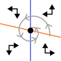
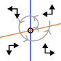

De predator-prooi relaties uit de vorige hoofdstukken zijn natuurlijk een hele specifieke interactie tussen soorten. Maar soorten hebben vaak op een veel meer subtiele manier competitie: ze strijden om een beperkte hoeveelheid voedselbronnen of nestplekken. Ook in andere biologische niveau’s zien we subtiele vormen van “competitie” terug. Denk bijvoorbeeld aan hoe transcriptiefactoren competitie ondervinden om bindingsplekken op het DNA, eiwitten competitie ondervinden om substraat, cellen in een weefsel competitie ondervinden om nutrienten en zuurstof (denk hierbij bijvoorbeeld ook aan kanker!). Om dergelijke interacties te begrijpen, maken we kennis met inter- en intraspecifieke competitie.
Afbeelding gegenereerd met ChatGPT4-o
15.1 Leerdoelen
De leerdoelen voor dit hoofdstuk zijn:
Begrijpen hoe intra- en interspecifieke interacties gemodelleerd kunnen worden.
Mogelijke evenwichten in faseruimtes van competitie kunnen benoemen, en uitleggen wat de biologische intepretaties van deze evenwichten zijn.
Een gegeven vectorveld afmaken en daarbij horende oplossingen schetsen
Verschillende uitkomsten van competitie aflezen aan een faseruimte
Begrijpen hoe je met ODEs evolutionaire vragen kan stellen, en deze contrasteren met evolutionaire uitkomsten in ruimtelijke modellen
15.2 Competitie binnen en tussen soorten
Inter-specifieke competitie is competitie tussen soorten, en intra-specifieke competitie staat voor competitie binnen een soort1. Als twee soorten bijvoorbeeld voornamelijk hetzelfde voedsel eten (of transcriptiefactoren hebben dezelfde bindingsplaats), zullen ze onderling veel competitie hebben. In ecologische begrippen stellen we dan dat de niches van de soorten sterk overlappen, wat we bijvoorbeeld kunnen bepalen door precies te meten welke zaadjes verschillende soorten vogels eten (Figuur 15.1). Hoe meer de niches overlappen, hoe sterker de inter-specifieke competitie.
Code
n <-1plot_niche_overlap <-function(mean1=-1, sd1=1, mean2=1, sd2=1){# Define the range for the x-axis x_range <-seq(-5, 5, length.out =1000)# Calculate the densities density1 <-dnorm(x_range, mean = mean1, sd = sd1) density2 <-dnorm(x_range, mean = mean2, sd = sd2)# Scale the densities to the same maximum height max_height <-0.4 density1_scaled <- density1 /max(density1) * max_height density2_scaled <- density2 /max(density2) * max_height overlap <-pmin(density1_scaled,density2_scaled)# Plot the first normal distributionplot(x_range, density1_scaled, type ="l", axes=F, xaxt='n', yaxt='n',yaxs="i",col ="blue", lwd =2, ylim =c(0, max_height*1.1), xlab ="", ylab ="", main ="")polygon(x_range,overlap,col="#FF000033",border =NA)lines(x_range, density1_scaled, col ="blue", lwd =2)lines(x_range, density2_scaled, col ="orange", lwd =2)arrows(0,0,7.5,0,xpd=NA,lwd=3,length =0.1)arrows(0,0,-7.5,0,xpd=NA,lwd=3,length =0.1)mtext("Kleine zaadjes",1,at=-5.5,cex=0.6)mtext("Grote zaadjes",1,at=4.8,cex=0.6)text(-10,0.6,paste0(LETTERS[n],')'),font=2,xpd=NA) overlap_pc <-round(sum(overlap)/sum(density1_scaled),digits=2)*100# title(main=paste0("N1 heeft ", # round(sum(overlap)/sum(density1_scaled),2)*100,"%",# " overlap met N2\n",# "N2 heeft ", # round(sum(overlap)/sum(density2_scaled),2)*100,"%",# " overlap met N1"),line = 0.5,cex.main=0.7)# n <<- n + 1}par(mfrow=c(1,1),mar=c(4,4,0,4))plot_niche_overlap()
Figuur 15.1: Als twee vogelsoorten verschillende voorkeuren voor zaadgrootte hebben, zullen ze competitie hebben om de zaadjes waar ze overlappen.
De niche overlap binnen een soort is eigenlijk per definitie 100%. Het is daarom redelijk om aan te nemen dat de competitie om voedsel binnen een soort (intra-specifieke competitie) sterker is dan de inter-specifieke competitie om voedsel. Echter kan intra-specifieke competitie ook door andere biologische processen teweeg gebracht worden. Zo kunnen bijvoorbeeld haviken uilen aanvallen om hen uit de beste jachtgebieden te verdrijven, of produceren veel schimmels toxines om bacteriën te onderdrukken. Zodoende kan het toch zijn dat de inter-specifieke competitie de overhand heeft, afhankelijk van het biologische scenario. Hoe hebben de twee bovengenoemde processen precies invloed op het wel/niet kunnen samenleven van soorten? Dit gaan we bestuderen met het Lotka-Volterra competitie model (vergelijkbaar maar niet hetzelfde als het Lotka-Volterra predator-prooi model).
15.3 Lotka-Volterra competitie
Laten we aannemen dat er twee populaties bestaan die beide logistisch groeien, genaamd \(N_1\) en \(N_2\):
Let op! De bovenstaande ODEs beschrijven géén interacties tussen de soorten: de ODE voor \(N_1\) bevat alleen \(N_1\), en de ODE voor \(N_2\) bevat alleen \(N_2\). Biologisch betekent dat dus dat de groei van \(N_1\) niet beïnvloed wordt door de aanwezigheid van \(N_2\), en vice versa. Er is dus wel sprake van intraspecifieke competitie (de soorten hebben competitie met zichzelf), maar niet van interspecifieke competitie. Om ook interspecifieke comptitie te modelleren, kunnen we aannemen dat de dichtheid van beide soorten (\(N_1\) + \(N_2\)) bepaalt of het draagvlak is bereikt (en of er dus nog groei mogelijk is):
Beide populaties hebben nu een gedeeld draagvlak (\(K\)). Dit is biologisch goed te verdedigen: deze wordt bepaald door de hoeveelheid voedsel of ruimte. Echter ondervinden beide populaties precies dezelfde dichtheidseffecten. Maar wellicht heeft soort 1 sterkere competitie met “zichzelf” (intra), en soort 2 sterke competitie met “de ander” (inter). Om dit te kunnen bestuderen, introduceren we een set van vier nieuwe parameters die de intra- en interspecifieke competitie schalen:
Hierbij schalen \(c_{11}\) en \(c_{22}\) de intraspecifieke competitie voor respectievelijk soort 1 en 2, \(c_{12}\) de competitie die soort 1 van soort 2 ondervindt, en \(c_{21}\) de competitie die soort 2 van soort 1 ondervindt. Laten we het aantal parameters beperken door aan te nemen dat \(K=1\), waardoor we deze kunnen weglaten uit de vergelijking. Als we \(N_1\) blauw kleuren, en \(N_2\) oranje, dan wordt ons systeem:
Om te kunnen onderzoeken of twee soorten kunnen samenleven, en onder welke voorwaarden, kunnen we weer de faseruimte analyseren. In het vorige hoofdstuk heb je geleerd hoe je dit eenvoudig met R zou kunnen doen. Echter is er ook een belangrijk voordeel aan het zelf schetsen van de faseruimte: we weten dan precies welke parameters bepalen hoe de nullclines liggen. Bovendien ontwikkel je door hiermee te oefenen een beter gevoel voor deze dynamische systemen. Daarom staat in Tip 15.1 een uitgebreid stappenplan voor het zelf tekenen van een faseruimte.
Tip 15.1: Algemeen stappenplan voor het schetsen van faseruimtes.
Stel, we analyseren een 2D ODE systeem bestaande uit variable \(A\) en \(B\):
Teken een assenstelsen met één populatie op de x-as, en de ander op de y-as. We zetten bijvoorbeeld A op de y-as en B op de x-as.
Vind de nullcline(s) voor A. Hiervoor los je \(\dt{A}=0\) op. Je kan een aantal verschillende typen nullclines vinden:
\(A=0\), wat gebeurt als elke term \(A\) bevat. Voor groeimodellen komt deze nullcline vaak (maar niet altijd!) voor.
\(A=C\), een horizontale lijn bij een niet-triviale hoeveelheid \(A\).
\(B=C\), een verticale lijn bij een niet-triviale hoeveelheid \(B\).
\(A=f(B)\) of \(B=f(A)\), wat gebeurt als je beide onbekenden (\(A\) en \(B\)) overhoudt. In dit geval is het vaak makkelijk om te zoeken naar een functie die in je assenstelsel een functie y=f(x) geeft. In dit geval is dus \(A=f(B)\) prettiger, want we hadden ervoor gekozen \(A\) op de y-as te zetten.
Vind ook de nullclines voor B. Als je wederom twee onbekenden overhoudt, zoek dan \(A=f(B)\) zodat je deze makkelijk in hetzelfde assenstelsel kan schetsen.
Teken de nullclines. Zorg dat je weet waar de nullclines (eventueel) de x- en y-as snijden, want dit kan belangrijk zijn om te bepalen of de nullclines elkaar snijden.
Snijpunten met de y-as vind je door \(x=0\) in de vullen.
Snijpunten met de x-as vind je door \(f(x)=0\) op te lossen.
Neem een extreme waarde in de faseruimte, en ga in de oorspronkelijke ODEs op zoek naar termen met hoge machten (kwadratische termen zoals (\(A^2\), \(B^2\), of \(AB\), of misschien zelfs \(A^3\), \(B^4\), etc.). De termen met de hoogste macht hebben altijd de overhand bij extreme waarden. Dat wil zeggen: deze termen zijn extra klein als de variabelen klein zijn, en extra groot als de variabelen groot zijn. Zo kun je bepalen wie zal groeien/krimpen.
Teken pijltjes in deze regio van de faseruimte om de richting van verandering aan te geven.
Vul de rest van het vectorveld in. De \(A\) en \(B\) nullclines geven aan waar het pijltje van richting verandert (respectievelijk voor \(A\) en \(B\))
Kies de begintoetsand waarin je geïnteresseerd bent. Schets een trajectory die de richtingen van het vectorveld volgt. Let op dat de pijlen kwalitatieve informatie geven (iets neemt toe of af), maar geen kwantitatieve informatie bevatten. We kunnen de trajectorie dus niet heel precies tekenen maar alleen schetsen. Een schets is goed als deze de richtingen van het vectorveld volgt.
Schets eventueel de oplossing (de variabelen geplot als functie van de tijd) die hierbij hoort.
15.4 Faseruimte van het competitiemodel
We volgen het hierboven genoemde stappenplan voor de analyse van ODEs, en gaan een faseruimte maken van het competitiemodel zoals eerder besproken:
Zoals gezegd is het handig om eerst te kiezen wat we straks op de x- en y-as gaan zetten (deze keuze heeft geen invloed op het model zelf, alleen op de visualisatie). Laten we ervoor kiezen om \(\textcolor{#2a53f7}N_\textcolor{#2a53f7}1\) op de x-as te zetten, en \(\textcolor{orange}N_\textcolor{orange}2\) op de y-as. We stellen beide ODEs gelijk aan 0, en gaan nullclines bepalen:
Let op dat dit beide nullclines zijn voor \(\textcolor{#2a53f7}N_\textcolor{#2a53f7}1\). Met andere woorden: hoewel de tweede nullcline uitgedrukt is als \(\textcolor{orange}N_\textcolor{orange}2=f(\textcolor{#2a53f7}N_\textcolor{#2a53f7}1)\), wordt dit straks een blauwe nullcline. We hadden deze nullcline ook kunnen uitdrukken als \(\textcolor{#2a53f7}N_\textcolor{#2a53f7}1=f(\textcolor{orange}N_\textcolor{orange}2)\), maar omdat \(\textcolor{orange}N_\textcolor{orange}2\) op de y-as staat, is die laatste keuze wat minder fijn schetsen.
Op dezelfde manier kunnen we ook de \(\textcolor{orange}N_\textcolor{orange}2\) (oranje) nullclines vinden:
We vinden dus ook twee nullclines voor \(\textcolor{orange}{N_2}\). We vinden wederom een nullcline voor een populatiegrootte van 0 (een populatie die niet bestaat kan ook niet groeien), en een nullcline die we uitdrukken als \(\textcolor{orange}N_\textcolor{orange}2=f(\textcolor{#2a53f7}N_\textcolor{#2a53f7}1)\), zodat we dit kunnen schetsen in de vorm \(y=f(x)\).
De twee “triviale” nullclines (dus \(\textcolor{#2a53f7}N_\textcolor{#2a53f7}1=0\) en \(\textcolor{orange}N_\textcolor{orange}2=0\)) zijn simpelweg lijnen die op de assen liggen. De andere twee nullclines zijn functies die lineair afnemen met \(\textcolor{#2a53f7}N_\textcolor{#2a53f7}1\), maar let op, er staan andere parameters in de vergelijkingen. Om precies te bepalen hoe deze rechte lijnen lopen, moeten we hun snijpunten met de x- en de y-as bepalen. De nullcline van \(N_1\) snijdt de y-as wanneer \(\textcolor{#2a53f7}N_\textcolor{#2a53f7}1=0\), dus bij \(\textcolor{orange}N_\textcolor{orange}2=\frac{1}{c_{12}}\), en de x-as bij \(\frac{1 - c_{11}\textcolor{#2a53f7}N_\textcolor{#2a53f7}1}{c_{12}}=0\), wat alleen 0 is als de teller 0 is, dus als \(\textcolor{#2a53f7}N_\textcolor{#2a53f7}1=\frac{1}{c_{11}}\). Vergelijkbaar, snijdt de nullcline van \(N_2\) de y-as bij \(\textcolor{orange}N_\textcolor{orange}2=\frac{1}{c_{22}}\) en de x-as bij \(\textcolor{#2a53f7}N_\textcolor{#2a53f7}1=\frac{1}{c_{21}}\).
Om precies te weten hoe deze lijnen in de faseruimte liggen, moeten we keuzes maken over de parameters. Als we bijvoorbeeld aannemen dat interspecifieke competitie zwakker is dan intraspecifieke competitie (\(c_{12}\) en \(c_{21}\) zijn kleiner dan \(c_{11}\) en \(c_{22}\)), dan liggen de nullclines zoals links weergegeven in Figuur 15.2. Om ook het vectorveld te bepalen, kijken we altijd naar extreme waarden (heel veel of weinig van beide populaties). Voor deze vergelijkingen komen we heel ver met alleen intuïtie: als beide soorten in grote aantallen voorkomen, kunnen ze alleen maar afnemen. Ook in de vergelijkingen zie je dit terug: als je de ODEs uitvermenigvuldigd zijn er kwadratische termen voor de competitie, terwijl de groei lineair toeneemt. Als de populaties dus heel groot zijn, zal competitie de overhand hebben, en de populaties dus afnemen. Beide manieren tonen dus aan dat het vectorveld rechtsbovenin naar links/onder wijst. De andere punten van het vectorveld kunnen we simpelweg afmaken door de pijltjes om te laten klappen als je over de bijbehorende nullcline gaat. Gaan we over een \(N_1\) nullcline dan klapt het horizontale pijltje om (want \(N_1\) staat op de x-as), en gaan we over een \(N_2\) nullcline dan klapt het verticale pijltje om (want \(N_2\) staat op de y-as). Omdat alle pijltjes naar het snijpunt wijzen waarbij beide populaties overleven (rechter zeide van Figuur 15.2), weten we dat dit evenwicht stabiel is. Voor het “triviale” evenwicht (waarbij beide soorten niet bestaan) zien we dat de pijlen er vanaf wijzen, dus dit evenwicht is instabiel. Ook de evenwichten waarbij 1 soort aanwezig is en de ander afwezig, zijn volgens deze zelfde analyse instabiel.
Figuur 15.2: Faseruimte voor het Lotka-Volterra competitie model, aangenomen dat competitie binnen soorten sterker is dan competitie tussen soorten (\(c_{12}\) en \(c_{21}\) zijn kleiner dan \(c_{11}\) en \(c_{22}\)).
Oefening 15.1 (Verschuivende competitie) Hierboven hebben we nullclines geschetst van het competitiemodel, onder de aanname dat interspecifieke competitie (competitie tussen soorten, \(c_{12}\) en \(c_{21}\)) sterker is dan intraspecifieke competitie (competitie binnen soorten, \(c_{11}\) en \(c_{22}\)). Beginnende vanuit deze opstelling: stel dat \(N_2\) steeds sterkere competitie krijgt met \(N_1\), maar niet andersom.
Welke parameter gaat er veranderen?
Welke nullcline in deze faseruimte zal verschuiven?
Als deze verschuiving doorzet, zullen de nullclines op een gegeven moment niet meer snijden.
Vanaf welk punt gebeurt dit?
Schets het vectorveld in de situatie dat de nullclines niet snijden, en teken een trajectorie om aan te geven wat er zal gebeuren als je met veel van beide soorten begint.
15.5 Coexistentie of exclusie?
Afhankelijk van de parameters zien we dat de nullclines van het Lotka-Volterra competitie model anders kunnen liggen. Laten we Grind gebruiken om het bovenstaande model verder te analyseren. We nemen eerst aan dat intraspecifieke competitie sterker is dan interspecifieke competitie.
Code
#Laad het grind.R-script insource("https://tbb.bio.uu.nl/rdb/grindR/grind.R")# Definitie van model. model <-function(t, state, parms) {with(as.list(c(state,parms)), { dN1 <- r*N1*(1-c11*N1-c12*N2) dN2 <- r*N2*(1-c22*N2-c21*N1)return(list(c(dN1, dN2))) }) } p <-c(r=1,c11=2,c22=2,c12=1,c21=1) #parameters met intra sterker dan inters <-c(N1=0.01,N2=0.001) # kleine begin-dichthedencolors[1] ="blue"colors[2] ="orange"par(mfrow=c(1,2)) # maak twee plot-ruimtesplane(vector=T,grid=3) # faseruimte run(traject=F,tstep=0.1,col="black",tmax=50) # numerieke oplossingmtext("LV competitie met sterke intraspecifieke competitie", cex=1.2,font=2,side =3, line =-3, outer =TRUE)
Het bovenstaande Grind-script bevestigt wat we net met pen-en-papier al hebben aangetoond: twee soorten kunnen samenleven wanneer er sterke intraspecifieke competitie is. Het evenwicht waar beide soorten voorkomen is dus een attractor van het systeem. Je zou je deze attractor kunnen voorstellen als een kuil waar een balletje door de zwaartekracht heen zal rollen (zie linkerzijde van Figuur 15.3). Tenzij één van de soorten vanaf het begin afwezig is, krijgen we dus altijd coexistentie (coexistence).
Figuur 15.3: Een bal die een dal in rolt en daar een stabiele plek bereikt (links) en een bal die een “zadelpunt” af rolt (rechts)
Omdat we nu ons R-script klaar hebben liggen, is het eenvoudig om deze aan te passen voor een scenario waar de twee soorten juist hele sterke interspecifieke competitie hebben, bijvoorbeeld wanneer twee bacterien toxines produceren om elkaar te inhiberen:
Code
# Laad het grind.R-script insource("https://tbb.bio.uu.nl/rdb/grindR/grind.R")# Definitie van model. model <-function(t, state, parms) {with(as.list(c(state,parms)), { dN1 <- r*N1*(1-c11*N1-c12*N2) dN2 <- r*N2*(1-c22*N2-c21*N1)return(list(c(dN1, dN2))) }) } p <-c(r=1,c11=1,c22=1,c12=2,c21=2) #parameterss <-c(N1=0.01,N2=0.001) # kleine begin-dichthedencolors[1] ="blue"colors[2] ="orange"par(mfrow=c(1,2)) # maak twee plot-ruimtesplane(vector=T,grid=3) # faseruimte run(traject=F,tstep=0.1,col="black",tmax=50) # numerieke oplossingmtext("LV competitie met sterke interspecifieke competitie", cex=1.2,font=2,side =3, line =-3, outer =TRUE)
Zoals je ziet heeft deze parameterverandering het vectorveld veranderd: waar eerst pijltjes naar het evenwicht in het midden wezen, wijzen nu slechts twee van de vier pijltjes naar het evenwicht. De andere twee wijzen er juist van weg. Dit type evenwicht heet een zadelpunt (saddle point).
Als we ons weer een balletje voorstellen dat naar beneden rolt, zal dit er uitzien zoals de rechterzijde van Figuur 15.3. Of het balletje naar links of naar rechts rolt, wordt eigenlijk uitsluitend bepaald door waar het balletje begon. Sterker nog, als het precies in het midden was begonnen, was het precies op het midden van het “zadel” blijven liggen (een dergelijke situatie is natuurlijk biologisch gezien niet heel reëel). Als we dit terug vertalen naar de samenleving van de twee soorten, kunnen we concluderen dat er geen coexistentie zal zijn, maar competitieve exclusie (competitive exclusion): één soort blijft over en de ander sterft uit. De soort die aanvankelijk meer voorkomt zal winnen, wat in de ecologie founder control wordt genoemd. Dit betekent dus ook dat als de andere soort invasief is (een nieuwe mutant of geïntroduceerd vanuit een ander continent), dat deze niet zal kunnen verspreiden.
Met het bovenstaande model zien we dat, afhankelijk van de parameters, er hele andere voorspellingen uit ons model komen rollen. Bovendien zien we dat evenwichtspunten (daar waar twee nullclines snijden) er heel anders uit kunnen zien. We zagen in het Lotka-Volterra model zonder verzadigbare predator een stabiele spiraal, met verzadigbare predator dat de populaties prooi- en predator blijven oscilleren, met zwakke competitie tussen soorten samenleving, en met sterke competitie tussen soorten competitieve exclusie. Al deze verschillende evenwichtsituaties (zie Tip 15.2) kunnen we aflezen aan de gegeven faseruimtes, en dit vertalen naar hoe het systeem zich over de tijd zal ontwikkelen.
Tip 15.2: Type evenwichten
Evenwicht
Equilibrium
Beschrijving
Illustratie
Stabiel punt
Stable point
Alle pijltjes wijzen naar het evenwicht toe
Instabiel punt
Unstable point
Alle pijltjes wijzen van het evenwicht weg.
Zadelpunt
Saddle point
In één richting wijzen de pijlen naar het evenwicht toe, maar in de andere richting wijzen ze er juist vanaf.
Stabiele spiraal
Stable spiral
Het vectorveld draait om het evenwicht heen, maar uiteindelijk beweegt het systeem naar het evenwicht toe.

Instabiele spiraal
Unstable spiral
Het vectorveld draait om het evenwicht heen, en het systeem beweegt weg van het evenwicht.

15.6 Evolutionaire vraagstukken
De scenario’s in dit hoofdstuk kunnen we zien als competitie tussen twee reeds bestaande soorten, maar ook als een invasie-experiment. Als een mutant (of een invasieve soort) zich bevindt in een gevestigde populatie, zal deze dan verspreiden? Zal deze soort de bestaande soort compleet vervangen, of zullen de populaties een evenwicht vinden? Al met al kunnen we drie mogelijke uitkomsten bedenken:
De mutant kan niet groeien
De mutant kan groeien en bereikt een stabiel evenwicht met de bestaande populatie
De mutant kan groeien en vervangt de bestaande populatie
Een heel interessante uitkomst vind je wanneer het evenwicht een zadelpunt vormt. In dit geval kan de mutant zich niet verspreiden, maar de bestaande populatie zou zich ook niet kunnen verspreiden in een populatie mutanten! Het eerder genoemde begrip founder control uit de ecologie, speelt dus ook een belangrijke rol in evolutionaire processen.
15.7 Opgaven
Oefening 15.2 (Het “werkelijke” vectorveld)
Het vectorveld hebben we tot nu toe versimpeld door slechts voor enkele punten aan te geven of de variabelen langs de x- en y-as zullen afnemen of toenemen. In werkelijkheid is dit vectorveld veel gedetailleerder: het geeft voor elk punt in de ruimte de unieke richting en unieke snelheid aan voor het systeem (zie bijvoorbeeld onderstaande figuur).
Het bovenstaande vectorveld hoort bij het Lotka-Volterra competitie model zoals besproken in dit hoofdstuk (weergegeven zonder de nullclines).
Is in bovenstaande vectorveld de inter- of intraspecifieke competitie sterker?
Kan je in een ODE met dezelfde begincondities verschillende richtingen op gaan? Waarom wel/niet?
Leg met je antwoord op b uit waarom een trajectorie zichzelf nooit zal kunnen snijden.
In werkelijkheid kan het weldegelijk zo zijn dat je een experiment onder dezelfde begincondities hebt gestart, en toch andere uitkomsten hebt. Geef twee verschillende redenen waarom dit in het experiment wel kan, en in je model niet.
Als een trajectorie een nullcline snijdt, gaat dat altijd onder een hele specifieke hoek. Druk in woorden uit waarom dat is, en in welke hoek je door de nullclines kan gaan.
Oefening 15.3 (Evenwichten en trajectories)
(a)
(b)
(c)
Figuur 15.4: Verschillende faseruimtes met nullclines, waarbij slechts in 1 hoek het vectorveld is gegeven.
In de bovenstaande faseruimtes zijn al nullclines getekend, en het vectorveld is aangegeven voor 1 regio.
Schets de faseruimtes na. Vul de rest van het vectorveld in en benoem de evenwichten (zie Tip 15.2 voor de namen voor de verschillende typen evenwichten)
Stel we beginnen met X=0.1 en Y=0.2. Schets in elke faseruimte een geldige trajectorie
Schets voor elke trajectory uit de vorige vraag een geldige oplossing (dat zijn dus per scenario twee grafieken in één assenstelsel).
Oefening 15.4 (Cheaters en cooperators)
In hoofdstuk Hoofdstuk 13 heb je kennis gemaakt met individual based modelling, en heb je gezien hoe cooperators en cheaters kunnen samenleven. Echter zagen we ook dat als het systeem te sterk gemengd werd, dat minder goed ging. Sterker nog, onder goed gemengde condities ging het eigenlijk helemaal mis, omdat de cheaters teveel toenamen en daarna het hele systeem uitstierf. Laten we kijken hoe dit uitpakt in een ODE die vergelijkbare aannames doet. Bekijk het volgende ODE model:
Anders dan in het individual-based model, waar we twee cooperators en één cheater hadden, beschrijven we nu alleen een populatie van cooperators en een populatie van cheaters. De parameters \(b_1\) en \(b_2\) kunnen onderling verschillen, maar beide soorten hebben dezelfde death rate \(d\).
Welk van de twee populaties is de cooperator, en welke de cheater? Waar zie je dit aan?
Waarom bevat de term \((1-\frac{C_1+C_2}{K})\) zowel \(C_1\) als \(C_2\)?
Als we een in de IBM een grid van 100x100 hadden, en er maar 1 individu in elke gridpunt past, hoe groot zou \(K\) dan ongeveer zijn?
Neem de volgende Grind code over, waar de cooperators iets sneller groeien dan de cheaters:
Bestudeer de faseruimte en het vectorveld. Hoeveel evenwichten zie je met alleen cooperators, en géén cheaters? Zijn de evenwichten stabiel, of instabiel? Controlleer je antwoord met newton(c(C1=1,C2=0),plot=T)
Voorspel wie er overleeft wanneer je begint met veel van beide soorten.
Voorspel wie er overleeft wanneer je begint met weinig van beide soorten.
We gaan nu aannemen dat de cheaters sneller groeien dan de cooperators (draai hiervoor de waarde van \(b_1\) en \(b_2\) om).
Bestudeer opnieuw de faseruimte en het vectorveld. Is het evenwicht met alleen cooperators stabiel of instabiel?
Voorspel opnieuw wie er overleeft, en hoe dat afhangt van de begin-dichtheden. Leg in biologische termen uit wat er gebeurt.
Bestudeer andere waarden van \(b_1\) en \(b_2\). Bij welke parameters kunnen zowel \(C_1\) als \(C_2\) blijven leven? Vind je de gevonden voorwaarde biologisch relevant?
In de simulatie hieronder is de birth rate van cooperators iets lager gemaakt dan die van de cheaters.
Hoe kan het dat het individual-based model coexistentie van de soorten laat zien, terwijl dit in de ODE niet kan?
Oefening 15.5 (Verdieping: parameter fitting)
Figuur 15.5: Figuur 1 uit Gause (1934)
In klassieke experimenten groeide Gause (1934) twee soorten Paramecium, zowel in isolatie als samen. De doorgetrokken lijnen in de figuur hierboven suggereren dat de groeicurve van P. aurelia en P. caudatum in isolatie redelijk goed beschreven worden door een logistische groeivergelijking. In Gause’s eigen handschrift zijn de geschatte parameterwaarden te lezen (\(r\) = 0,794 per dag met \(K\) = 64 voor P. caudatum en \(r = 1,129\) per dag met \(K = 105\) voor P. aurelia). We gaan deze parameter-waarden bestuderen met Grind. Neem het volgende script over:
source("https://tbb.bio.uu.nl/rdb/grindR/grind.R")model <-function(t, state, parms) {with(as.list(c(state,parms)), { dtN <- r*N*(1- N/K)return(list(c(dtN))) }) } p <-c(r=1,K=100) # Een ruwe gok van de parameterss <-c(N=2)run(18) # Run het model 18 tijdstappen
Waarom denk je dat we het model voor slechts 18 tijdstappen doorrekenen?
De ruwe data voor de soorten in isolatie (dus de rondjes in de figuur hierboven) staan op de website. Deze kan je zelf plotten, maar Grind heeft ook hier een ingebouwde functie voor (zie onderstaande code):
caudatum <-read.table("https://tbb.bio.uu.nl/bvd/bms/data/caudatum.txt", header=TRUE)timePlot(caudatum,draw=points) p <-c(r=2,K=50) s <-c(N=3)run(18,add=T)
In de laatste regel code wordt het Grind-model over de data heen geplot.
Probeer door trial-and-error een betere fit te krijgen aan de data (let op: je kunt zowel de parameters \(r\) en \(K\), als de initiele conditie van \(N\) aanpassen).
Tot hoeveel decimalen heb je \(r\), \(K\), en \(N\) geschat? Vertrouw je de uitkomst, en wellicht belangrijker, kun je dit vertrouwen objectief onderbouwen?
Trial-and-error is niet reproduceerbaar voor andere wetenschappers, en is bovendien een enorm gepruts als je nog meer parameters hebt! Grind kan daarom ook parameter-fitting doen: automatisch veel mogelijke parameters uitproberen om zo tot een goede (hopelijk de beste) “fit” te komen:
caudatum <-read.table("https://tbb.bio.uu.nl/bvd/bms/caudatum.txt", header=TRUE)timePlot(caudatum,draw=points) p <-c(r=1,K=10) s <-c(N=2)run(18,add=T) free <-c("r","K","N") fC <-fit(caudatum,free=free,main="Caudatum",legend=FALSE)
Wat denk je dat er in deze code wordt bedoeld met ‘free’?
Voer de bovenstaande code uit voor zowel de gegeven waarden (\(r=1\), \(K=10\), \(N=2\)), als de waarden die je met trial-and-error gevonden hebt. Is het eind-resultaat (de parameter-schattingen) vergelijkbaar?
Om de betrouwbaarheid van de fit te bestuderen, kunnen we de functie ‘summary’ in R gebruiken om de fit samen te vatten:
fC <-fit(caudatum,free=free,main="Caudatum",legend=FALSE)summary(fC)
Estimate Std. Error t value Pr(>|t|)
r 0.7623 0.2221 3.433 0.00496 **
K 60.9539 3.2774 18.598 3.25e-10 ***
N 3.7722 2.8796 1.310 0.21473
--
Signif. codes: 0 ‘***’ 0.001 ‘**’ 0.01 ‘*’ 0.05 ‘.’ 0.1 ‘ ’ 1
Residual standard error: 8.195 on 12 degrees of freedom
Parameter correlation:
r K N
r 1.0000 -0.4381 -0.9272
K -0.4381 1.0000 0.3023
N -0.9272 0.3023 1.0000
Deze samenvatting geeft naast de parameter-waarden ook een boel andere statistiek (standaard error, P-waarden, correlaties). Wat deze termen betekenen, en hoe je ze moet interpreteren, leer je bij het onderdeel statistiek.
15.8 Terminologie
Nederlands
Engels
Beschrijving
Intraspecifieke competitie
Intraspecific competition
Competitie binnen een soort (tussen soortgenoten)
Interspecifieke competitie
Interspecific competition
Competitie tussen verschillende soorten
Coexistentie
Coexistence
De samenleving van twee of meerdere soorten.
Competitieve exclusie
Competitive exclusion
Twee soorten die niet duurzaam kunnen samenleven; de ene zal de andere verdringen.
Parameter fitting
Parameter fitting
Het zoeken naar de parameters waarmee een model (bijvoorbeeld een ODE) overeenkomt met de data. Let op: er is niet altijd slechts één set parameters die de data goed kan beschrijven, dus het fitten van een model is geen garantie dat het model correct is!
Als je net als ik dit slecht kan onthouden, kun je de Intratuin als ezelsbruggetje gebruiken: “in de tuin” klinkt kloppend, maar “tussen de tuin” klinkt toch een beetje vreemd↩︎